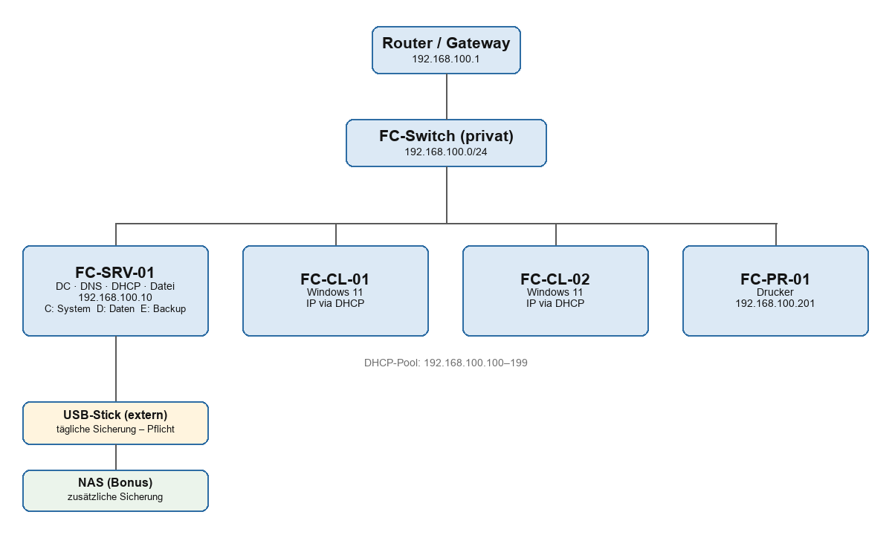

Diese Seite zeigt die Netzwerktopologie der fiktiven Flying Circus GmbH, so wie sie im Netzwerkauftrag aufgebaut wurde. Die gesamte Umgebung laeuft virtuell in Hyper-V: ein Windows-Server als Domain Controller mit DNS, DHCP, Datei- und Druckdiensten, dazu zwei Windows-11-Clients, ein Netzwerkdrucker und zwei Sicherungsziele. Alles haengt am privaten Switch FC-Switch im Subnetz 192.168.100.0/24.
Unten zusaetzlich der original gezeichnete Netzwerkplan aus dem Konzept.

| Komponente | Name | Rolle / OS | IP-Adresse |
|---|---|---|---|
| Server-VM | FC-SRV-01 | Windows Server 2025 – DC, DNS, DHCP, Datei, Druck | 192.168.100.10 (statisch) |
| Client-VM | FC-CL-01 | Windows 11 Pro | via DHCP (.100–.199) |
| Client-VM | FC-CL-02 | Windows 11 Pro | via DHCP (.100–.199) |
| NAS | FC-NAS-01 | Separates Backup-Ziel | 192.168.100.20 (statisch) |
| Drucker | FC-PR-01 | Netzwerkdrucker | 192.168.100.201 (Reservierung) |
| Switch | FC-Switch | Hyper-V-Switch, Typ privat | Subnetz 192.168.100.0/24 |